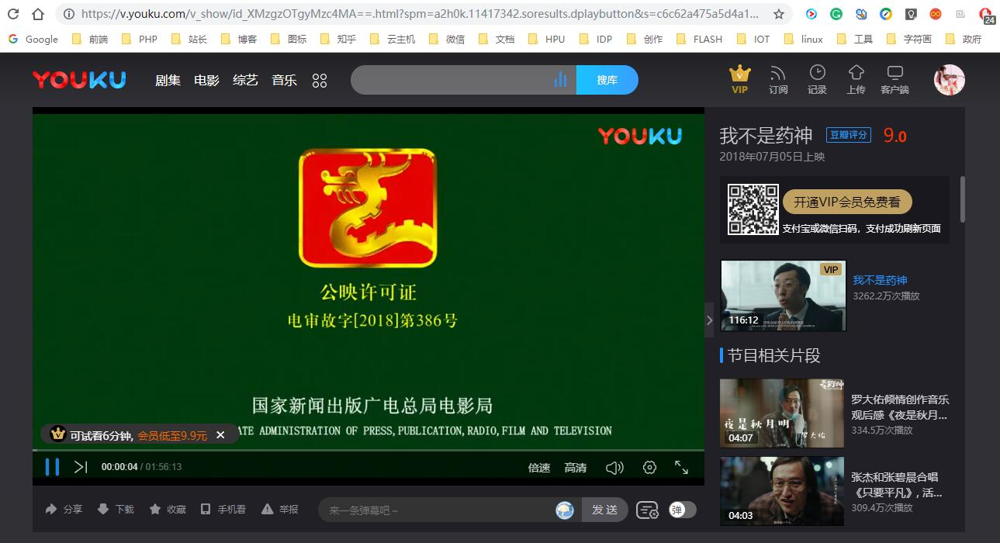

本网站搜索功能不仅可以进行关键词搜索，还可以输入视频播放地址直接进行播放，以 优酷网 的《我不是药神》为例：

因为不是VIP，所在优酷网只能播放前6分钟，把地址栏的视频网址复制，然后粘贴进《影视爬虫》的搜索框，回车即可跳转解析视频！
本站使用网页cookies技术保存您的观看记录，记录存储于您的电脑并且最多保留24小时；假如您在观看某电视剧时关闭了网站，在24小时内再次打开播放页面，您上次观看的剧集数会标红。
本站不采集和存储任何用户隐私数据，保障您的信息安全。
本站所有能搜索到的视频从理论上均能播放，如果播放不出来请更换底部的解析器。
由于运营商劫持的原因，移动端在播放页面可能会出现不健康广告，使用电脑访问不会出现。
本站提供的最新电影、电视剧和综艺资源均系收集于各网络视频网站，本站只提供web页面服务，不提供影片资源存储，不参与录制、上传。
若本站收录的节目无意侵犯了贵司版权，请向：lifankohome#163.com 来信，我们会及时处理和回复。